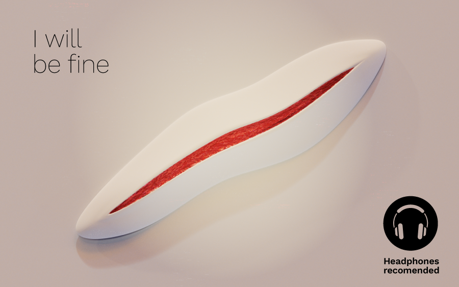

Hello there!
Nice to see you here!
I am Dhruv, a digital product designer with a passion for working with data and making new tech accessible.
I have over 4 years of product design experience at companies like Accolite, Credit-Suisse, Deloitte India and Itu Chaudhuri Design.
I’ve developed significant skills driving products from idea to execution. I enjoy solving complex problems and experimenting across mediums.
Have a look at
I am Dhruv, a digital product designer with a passion for working with data and making new tech accessible.
I have over 4 years of product design experience at companies like Accolite, Credit-Suisse, Deloitte India and Itu Chaudhuri Design.
I’ve developed significant skills driving products from idea to execution. I enjoy solving complex problems and experimenting across mediums.
Have a look at
My Resume →︎︎
My Experiments →︎︎
Projects

Helping older adolescents break out of self isolation. Designing for a post-covid world.
Problem-finding | Social network | Older Adolescents | Mental health | Post-pandemic |
DESIGNATHON | 24 HOURS + 1 WEEK

Enabling better customer experiences with conversation design and voice analytics.
| Linguistics | User Experience Design | Voice analytics | Conversation design |
LIVE PROJECT | 12 MONTHS

A crowdsourced news classifier to identify bias and fight polarization.
| NLP | Linguistics | News | UX Design | Social Impact | New Media | GPT-3 | News Debates |
ACADEMIC PROJECT | 2 MONTHS

Building a No/low-Code Website builder for designers.
| Product design | UX Design | User Research | Marketing & Branding | Strategy |
LIVE PROJECT | 6 MONTHS

I will be fine - an audio installation questioning identity and idea of the self.
| Staging | Experience design | Generative art | Boids | Sculpture | AR filters | New Media |
ACADEMIC PROJECT | 3 MONTHS
⚡Thanks for visiting !⚡
All rights Reserved. 2014 - 2022 | Dhruv Sanjiv Srivastava